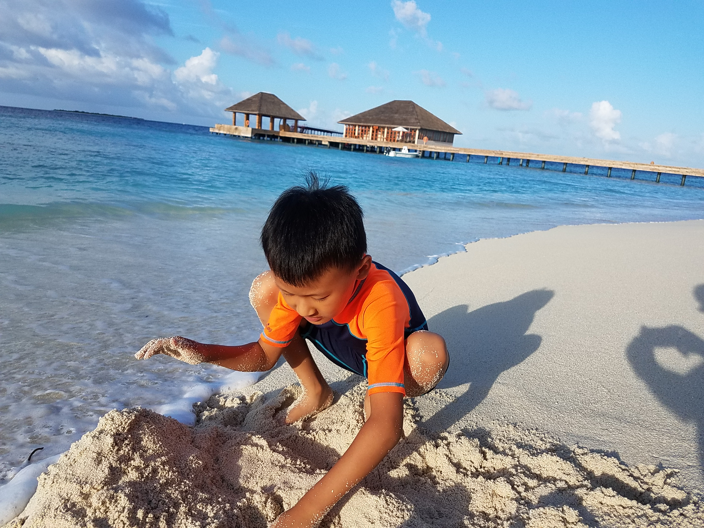
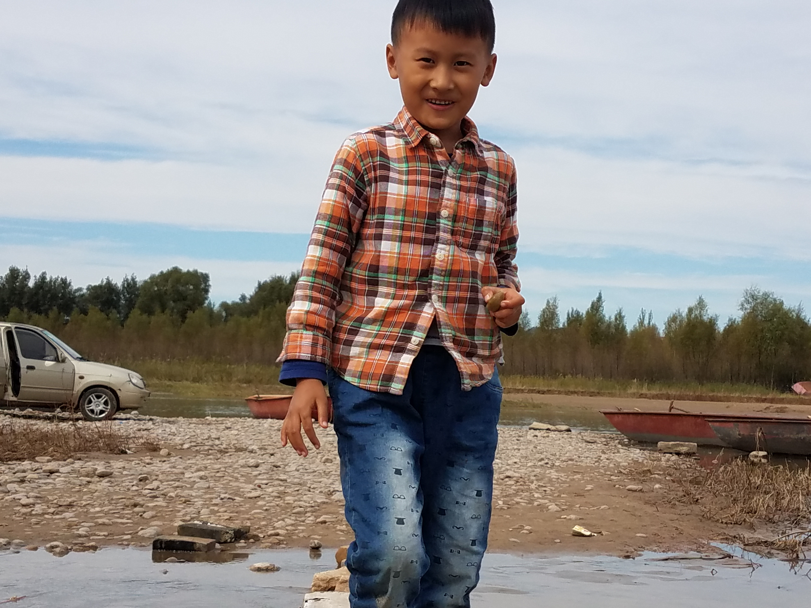
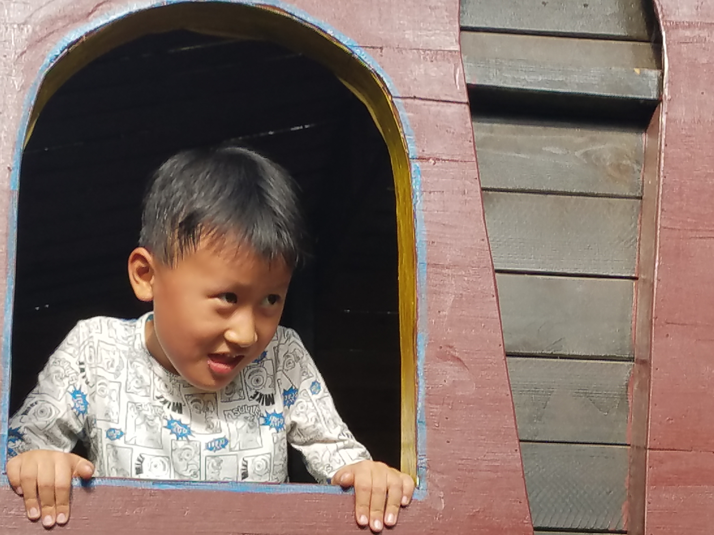
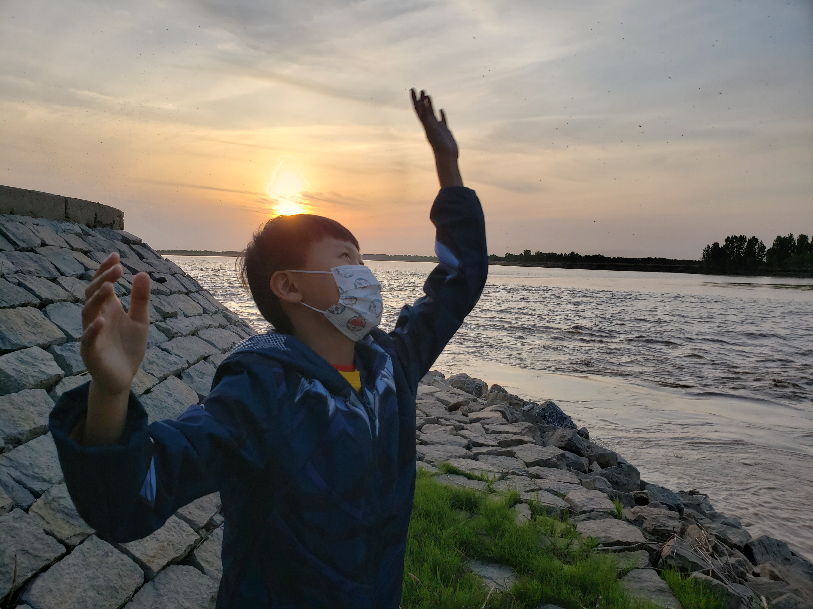
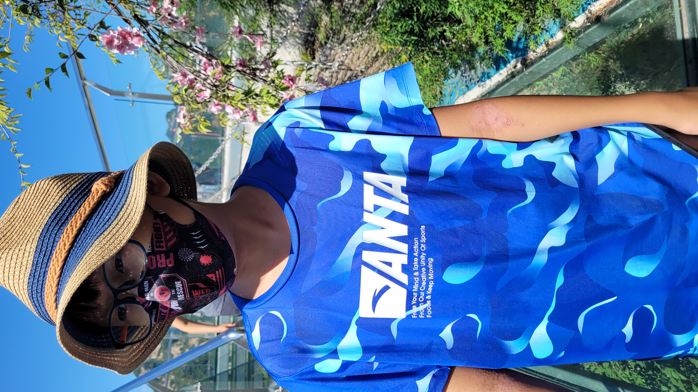

成长片段 Growing Moments

海边玩沙的那个下午
2017 夏天
海水刚刚漫上来，白沙细得发亮，专心挖沙的小小背影把整个海岛假期都变得具体起来。

木屋露台上的回头一眼
2017 夏天
树影、白沙、木地板和一件红色上衣，把旅途中那种轻快的停顿感一下子保留下来。

河岸边的笑脸
2017 秋天
车停在一边，小船搁浅在岸，脚下是碎石和浅水，画面里有一种特别朴素的快乐。

小窗里的调皮表情
2017 冬天
趴在木窗边的神情很生动，像是玩到忘记镜头存在时，自然冒出来的一点机灵劲。

山谷里的清绿湖水
2018 秋天
整个人站在绿色湖边，眼神里已经多了一点安静和好奇，像是在认真看更大的世界。

落日边张开的双手
2021 春天
风吹着河面，夕阳正好落下去，孩子站在堤岸边张开手，像是在和傍晚一起做一个夸张又真诚的动作。

温泉池里的夏日小动作
2022 夏天
水很亮，阳光很足，低头整理泳镜和头发的动作很随意，却特别像长大之后更自在的样子。

泳池边的蓝色背心
2022 夏天
草帽、口罩、眼镜和鲜亮的蓝色上衣，让这个画面像假期里一张轻松又醒目的封面照。